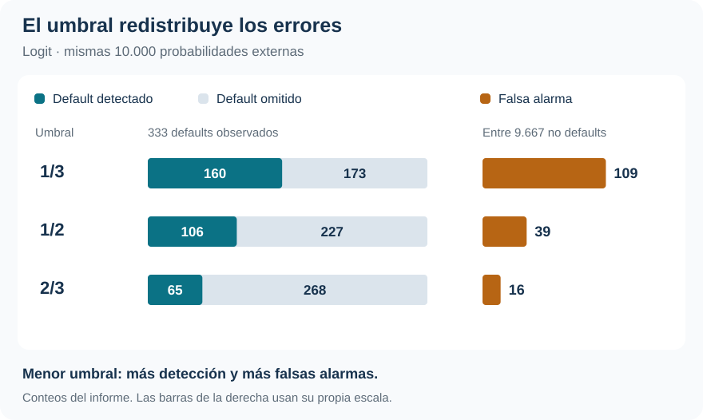

Riesgo de default: de la probabilidad a la decisión
Logit y KNN frente a eventos poco frecuentes, validación anidada y costos de error
Clasificación · Probabilidades · Costos de error
Logit generaliza mejor que KNN en esta aplicación. Pero elegir el modelo no resuelve cuánto riesgo de omitir un default estamos dispuestos a aceptar.
La comparación separa tres tareas: estimar la probabilidad de default, convertirla en una decisión y evaluar esa regla con observaciones que no participaron en su aprendizaje. Los costos de error cambian la acción, incluso cuando la probabilidad estimada permanece igual.
Defaults observados
333
En 10.000 observaciones: prevalencia de 3,33 %.
Error externo de Logit
2,66 %
Pérdida simétrica; KNN obtiene 2,85 %.
Detección con Logit
31,8 %
De los defaults, con umbral 1/2; sube a 48,0 % con umbral 1/3.
Log-loss de Logit
0,0790
Probabilidades externas; referencia de prevalencia: 0,1460.
El problema empieza antes de elegir el clasificador
¿Cómo identificar riesgo de default cuando el evento es poco frecuente y no todos los errores tienen la misma consecuencia? En Default, del paquete ISLR2, una regla que siempre responde «no default» alcanza 96,67 % de aciertos. Una accuracy elevada, por sí sola, dice poco sobre la capacidad de detectar los casos de interés.
La información disponible es la misma para ambos métodos: condición de estudiante (student), saldo (balance) e ingreso (income). Logit estima una relación global lineal en los log-odds; KNN calcula una probabilidad local como la proporción de defaults entre los \(K\) vecinos más cercanos. La comparación pregunta si esa flexibilidad local agrega valor con estos tres predictores.
La aplicación es predictiva. Las asociaciones con saldo, ingreso o condición de estudiante no se interpretan como efectos causales ni como una política de crédito validada para una cartera real.
Evaluar también la selección de K
Los dos procedimientos comparten cinco folds externos estratificados. En cada vuelta, aproximadamente 8.000 observaciones entrenan y 2.000 quedan reservadas. Al reunir las cinco vueltas se obtienen 10.000 predicciones fuera de fold —OOF—: cada caso fue predicho sin utilizarlo para aprender su regla.
Logit mantiene una especificación fija y no necesita tuning interno. En KNN, cada entrenamiento externo contiene otra validación de cinco folds para elegir entre \(K=1,3,\ldots,51\). El riesgo externo evalúa, por tanto, el procedimiento completo que selecciona K y después predice, sin usar los resultados externos para escogerlo.
El escalado también se aprende dentro de cada entrenamiento. Saldo e ingreso se estandarizan con sus medias y desvíos de entrenamiento; la indicadora de estudiante permanece en 0/1. Tras elegir \(K\), se reaprende el escalado con todo el entrenamiento externo y se aplica al fold reservado. Estandarizar previamente con las 10.000 observaciones introduciría información de evaluación en el procedimiento.
La función de pérdida define el umbral
Un falso positivo (FP) anuncia default donde no ocurre; un falso negativo (FN) omite un default. Si los aciertos tienen costo cero, la regla clasifica como default cuando
\[ \widehat p(x)>\frac{c_{FP}}{c_{FP}+c_{FN}}, \qquad \widehat R=\frac{c_{FP}FP+c_{FN}FN}{n}. \]
Los costos del ejercicio son relativos y docentes, no pérdidas monetarias observadas. Con costos iguales el umbral es 1/2; si omitir un default cuesta el doble, baja a 1/3; si la falsa alarma cuesta el doble, sube a 2/3.
Logit conserva las mismas probabilidades externas y cambia únicamente el umbral. En KNN, además, \(K\) se selecciona por separado para cada función de pérdida: los tres escenarios pueden utilizar probabilidades diferentes.
| Escenario | Umbral | Riesgo «siempre no» | Riesgo Logit | Riesgo KNN |
|---|---|---|---|---|
| Costos iguales | 1/2 | 0,0333 | 0,0266 | 0,0285 |
| FN cuesta el doble | 1/3 | 0,0666 | 0,0455 | 0,0481 |
| FP cuesta el doble | 2/3 | 0,0333 | 0,0300 | 0,0308 |
Logit presenta menor riesgo externo en los tres escenarios, y ambos modelos mejoran la referencia decisional. Las comparaciones se hacen dentro de cada fila: cambiar los costos cambia la escala del riesgo. Solo con pérdida simétrica el riesgo coincide con la proporción de errores.
Detectar más implica aceptar más falsas alarmas
La ventaja agregada no elimina el compromiso entre errores. Con umbral 1/2, Logit detecta 106 de 333 defaults y produce 39 falsas alarmas. Al bajar a 1/3, detecta 160 y las falsas alarmas aumentan a 109. La sensibilidad pasa de 31,8 % a 48,0 %, mientras la tasa de error aumenta de 2,66 % a 2,82 %: el objetivo cambió hacia evitar omisiones más costosas.

Con umbral 2/3, la precisión entre las alertas positivas llega a 80,2 %, pero se detecta solo 19,5 % de los defaults. Sensibilidad y precisión responden preguntas distintas: cuántos eventos se recuperan y cuántas alertas resultan correctas. El umbral adecuado depende de las consecuencias de equivocarse.
Buenas decisiones y buenas probabilidades se evalúan por separado
El log-loss juzga directamente la probabilidad anunciada y penaliza mucho los pronósticos extremos equivocados. No es una tasa de error. En las mismas predicciones externas se obtiene:
| Probabilidades evaluadas | Log-loss |
|---|---|
| Prevalencia del entrenamiento externo | 0,1460 |
| Logit | 0,0790 |
| KNN, seleccionado por pérdida simétrica | 0,2655 |
KNN mejora la clasificación frente a «siempre no», pero sus probabilidades empeoran la referencia que anuncia únicamente la prevalencia de entrenamiento. Bajo selección simétrica, 59 defaults reciben probabilidad KNN exactamente cero. El cálculo del log-loss limita numéricamente las probabilidades a \([10^{-15},1-10^{-15}]\) para evitar infinitos; no modifica las decisiones. Esa convención importa al leer la magnitud del castigo.
KNN fue seleccionado por riesgo de clasificación, no por log-loss. Este resultado es un diagnóstico adicional de sus probabilidades y no autoriza a reinterpretar retrospectivamente el tuning.
Qué decisión permite sostener la evidencia
Modelo, umbral y alcance
Para esta base, estos predictores y este diseño, Logit es la alternativa mejor respaldada por riesgo externo y calidad probabilística. La decisión operativa todavía exige explicitar el costo de cada error: una alta accuracy puede coexistir con muchos defaults omitidos.
La ventaja en error simétrico es modesta y no demuestra superioridad universal de Logit. Tampoco se compararon otras representaciones o distancias para KNN. Después de evaluar, el informe selecciona \(K=25\) con toda la muestra bajo pérdida simétrica; su riesgo de tuning de 2,70 % no sustituye al 2,85 % externo que evalúa generalización.
La separación entre aprendizaje y evaluación reaparece en Smarket, donde debe respetar el tiempo. Caravan muestra un límite más fuerte: una alta tasa de aciertos sin recuperar ningún evento positivo.
Fuente: informe curado «Taller 1: Clasificación binaria con Default», ISLR2. SVG elaborado con los conteos externos reportados; tablas seleccionadas del informe. No se generaron estimaciones nuevas.